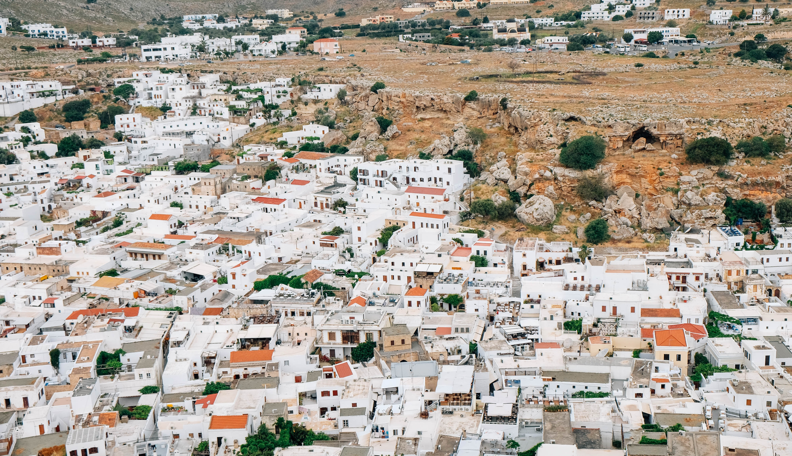
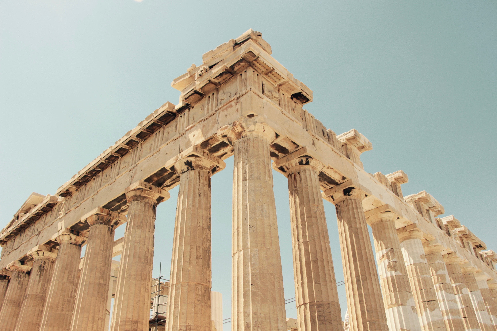

Sustainable travel to the Colossus of Rhodes?
To Rhodes with the lowest CO2 consumption - no problem. For this I took the bus, which brought me from Berlin to Budapest. It cost me about 45€, a bargain to discover one of the capitals of Europe. A "Crazy Holidays" bus is available 3 times a week to take you to the legendary city of Athens. The flair of Greece grabs you as soon as you set foot in Athens. An impressive building is enthroned on a mountain above the city. Temples for Greek gods and other remains from ancient times adorn the entire city of Athens. History was written in historical theatres. In Athens one sight follows the next. Therefore it was a pity to leave this city after this sight but it was not the aim of my journey. I had to go to a station which was only a quarter of an hour away from my arrival in Athens. From Παλαια Αγορα (Palia Agora) my journey continued in the direction of the ferry. The bus that takes me there comes every 20 minutes, so I didn't feel any time pressure. Arrived at Αφετηρια (Afetiria) it took me on foot to the harbour where the ferry was already waiting. This ferry left in Piraeus and went straight to the island of Rhodes.

I did not have my accommodation directly in Rhodes. My accommodation was near Faliraki. From there it was not far to the main road of the whole island which led from one side to the other. At this main road there were bus stops every 500-800 meters. For a bus ticket to Rhodes you just pay 2,80 €, compared to that you can't even travel from Berlin to Werder and the distance on Rhodes is longer.
The island Rhodes has many cities that invite to a sightseeing. I decided to visit Lindos for one day. A hill town with an ancient temple on the top of the mountain. Once you get up there, the view is hard to describe. Lindos offers wonderful shopping streets which invite you to stroll.

But you can't have been to Rhodes without ever seeing the ancient city. So my holiday trip finally led me to the city of Rhodes. In which you can walk along the ancient city wall as well as in the harbour or the castle garden. Rhodes offers an incredible atmosphere and the food is indescribable. A little tip: order souvlaki in a pita bread in a restaurant of your choice. This is not only cheap but delicious and you can take it with you so you don't miss out on the city.